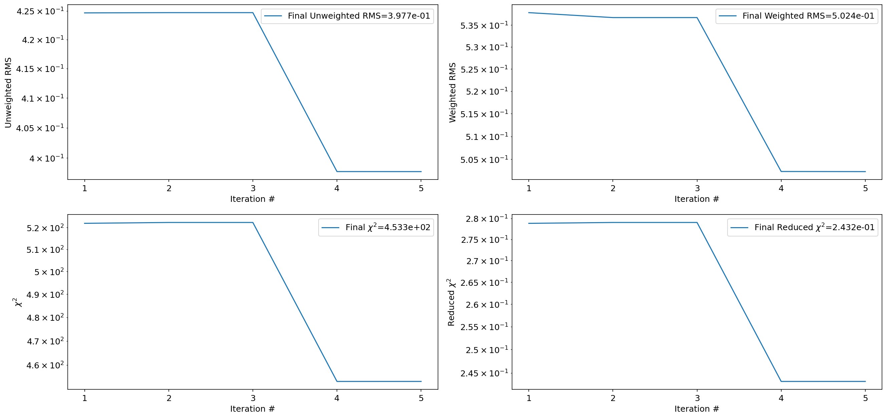
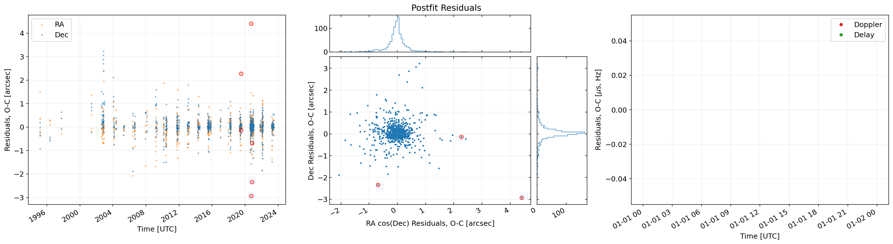
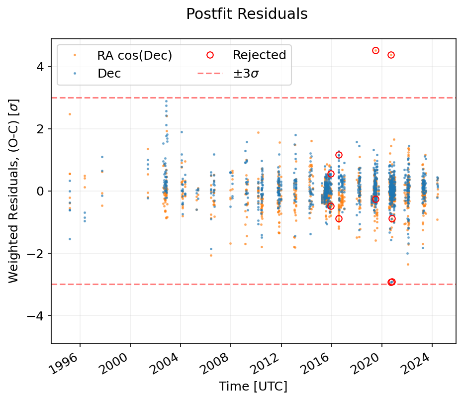

(84100) Farnocchia orbit determination test¶
[1]:
import grss
prop = grss.prop
fit = grss.fit
[2]:
import numpy as np
np.set_printoptions(precision=40, linewidth=np.inf)
import matplotlib.pyplot as plt
[3]:
body_id = '84100'
init_sol, init_cov, nongrav_info = fit.get_sbdb_info(body_id)
body_radius = 0.0
[4]:
optical_obs_file = None
t_min_tdb = None
t_max_tdb = None
debias = False
debias_lowres = True
deweight = True
eliminate = False
max_obs_per_night = 4
verbose = True
obs_array_optical, observer_codes_optical = fit.get_optical_obs_array(body_id, optical_obs_file, t_min_tdb, t_max_tdb, debias, debias_lowres, deweight, eliminate, max_obs_per_night, verbose)
obs_array_radar, observer_codes_radar = fit.get_radar_obs_array(body_id, t_min_tdb, t_max_tdb, verbose)
Skipped 21 observations
21 of which were non-geocentric occultations or space-based observations,
0 were either roving or radar observations (radar is handled separately),
0 of which were outside the specified time range.
No debiasing needed for 505 observations. Debiased 417 observations. No biasing information for 0 observations.
Applied default weight of 1 arcsec to 38 CCD observations
Deweighted 208 observations as part of deweighting scheme.
[5]:
n_iter_max = 10
de_kernel = 441
de_kernel_path = grss.utils.default_kernel_path(de_kernel)
fit_sim = fit.FitSimulation(init_sol, init_cov, obs_array_optical, observer_codes_optical, obs_array_radar, observer_codes_radar, n_iter_max=n_iter_max, de_kernel=de_kernel, de_kernel_path=de_kernel_path, radius=body_radius, nongrav_info=nongrav_info)
[6]:
fit_sim.filter_lsq()
Iteration Unweighted RMS Weighted RMS Chi-squared Reduced Chi-squared
1 0.428 0.530 518.511 0.282
2 0.428 0.530 518.085 0.282
Converged without rejecting outliers. Starting outlier rejection now.
3 0.393 0.490 439.757 0.241
4 0.393 0.490 439.621 0.240
Converged after rejecting outliers.
[7]:
fit_sim.print_summary()
Summary of the orbit fit calculations at iteration 4 (of 4):
=======================================================
RMS unweighted: 0.39312419172125085
RMS weighted: 0.48959782039064675
chi-squared: 439.6208511911529
reduced chi-squared: 0.2404928069973484
square root of reduced chi-squared: 0.49040065966243196
=======================================================
t: MJD 57900.0 TDB
Fitted Variable Initial Value Uncertainty Fitted Value Uncertainty Change Change (sigma)
e 2.02922458015e-01 3.51842031434e-08 2.02922457668e-01 3.44829983100e-08 -3.46897371939e-10 -0.010
q 2.17573385967e+00 9.43400203799e-08 2.17573386060e+00 9.26483057579e-08 +9.30700849722e-10 +0.010
tp 5.74183571490e+04 3.77402663480e-05 5.74183571445e+04 3.55718860672e-05 -4.48046193924e-06 -0.119
om 1.52357330368e+02 3.65881788601e-05 1.52357322985e+02 3.61051554640e-05 -7.38355853969e-06 -0.202
w 2.08343130337e+02 3.75791928400e-05 2.08343136309e+02 3.69436524751e-05 +5.97243072775e-06 +0.159
i 5.81863574787e+00 3.66657233129e-06 5.81863703559e+00 3.52859210395e-06 +1.28771870234e-06 +0.351
[8]:
fit_sim.plot_summary(auto_close=True)

[9]:
fit_sim.iters[-1].plot_iteration_summary(title='Postfit Residuals', auto_close=True)

